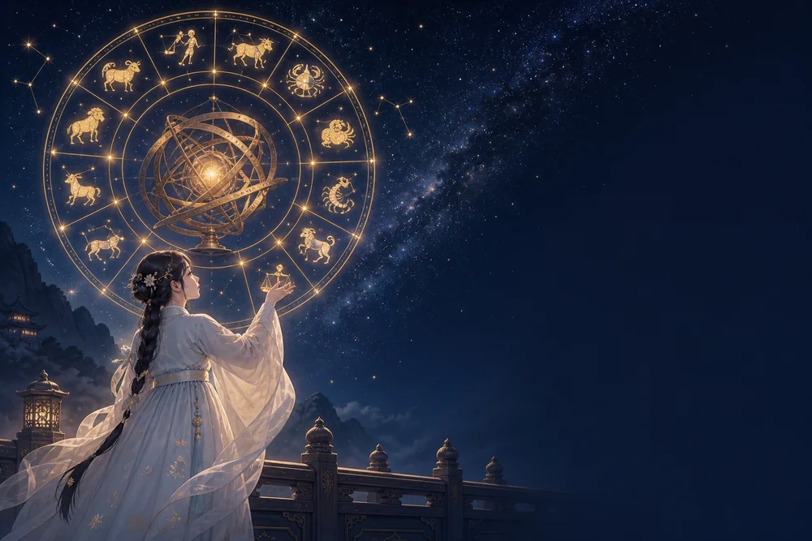

♐ 궁수자리 — 성격·연애·궁합·오늘의 운세
궁수자리 한눈에 보기
궁수자리는 늦가을에서 겨울로 넘어가는 구간에 놓입니다. 한 계절이 끝나고 다음이 시작되는 자리라, 점성술에서 이 별자리는 '확장과 이동'을 맡습니다. 신화에서는 반인반마 케이론이 이 별자리가 되었다고 전합니다. 켄타우로스 중 유일하게 의술과 학문을 가르친 현자였고, 활을 들어 먼 곳을 겨누는 모습으로 그려집니다. 지금 있는 곳보다 먼 곳을 보는 눈이 이 별자리의 핵심입니다.
원소는 불이고 양태는 변통궁, 수호성은 목성입니다. 불은 의욕과 낙관, 변통궁은 상황에 맞춰 방향을 바꾸는 성질, 목성은 확장과 행운을 뜻합니다. 그래서 궁수자리는 '넓히는 자리'가 됩니다. 새로운 장소, 새로운 지식, 새로운 사람에 대한 호기심이 이 별자리를 계속 움직이게 합니다.
강점은 낙관과 회복력입니다. 실패를 오래 담아두지 않고 다음 판을 봅니다. 솔직하고 꾸밈이 없어 사람이 쉽게 다가오고, 큰 그림을 그리는 능력이 있어 방향을 제시하는 자리에서 힘이 납니다. 낯선 환경에 던져져도 금방 자기 자리를 만듭니다. 배우고 가르치는 일에 대한 애정이 평생 이어지는 경우가 많습니다.
약점은 세부와 지속입니다. 큰 그림에 집중하다 보니 마감, 숫자, 절차 같은 것을 놓칩니다. 솔직함이 상황을 못 읽은 직설이 되어 상대에게 상처를 주기도 합니다. 흥미가 식으면 이미 시작한 것도 놓아버리는 편이라, 신뢰를 잃는 경우는 대개 능력이 아니라 마무리에서 옵니다. 약속을 줄이고 지킨 약속의 비율을 올리는 것이 이 별자리의 성장입니다.
궁수자리의 연애
구속을 가장 힘들어하는 쪽입니다. 애정이 없어서가 아니라 자유가 줄어드는 감각 자체를 견디지 못합니다. 좋아하는 마음은 솔직하게 표현하고, 함께 새로운 것을 경험하는 시간에서 관계의 만족을 느낍니다.
연애가 여행처럼 흘러가는 편이라 함께 움직이는 상대와 잘 맞습니다. 반대로 매일 같은 패턴을 요구받으면 답답해합니다. 확인하는 연락이 잦아질수록 마음이 멀어지는 구조라, 신뢰를 기반으로 각자의 시간을 인정하는 관계에서 오래갑니다.
주의할 지점은 말입니다. 솔직함이 미덕이지만 타이밍을 못 맞춘 직설은 상처가 됩니다. 상대가 힘들 때는 해결책보다 공감을 먼저 건네는 연습이 이 별자리의 관계를 크게 바꿉니다.
궁수자리의 일과 적성
넓히는 일에서 강합니다. 해외 사업, 유통, 교육, 출판, 여행, 스포츠, 강연처럼 이동과 확장이 있는 분야가 잘 맞습니다. 새로운 시장을 여는 일, 사람들에게 방향을 설명하는 일에서 목성의 힘이 드러납니다.
변통궁이라 상황이 바뀌어도 빠르게 적응하고, 여러 분야를 오가며 경험을 쌓는 경로가 자연스럽습니다. 반복되는 관리 업무나 좁은 공간에 묶이는 자리에서는 능력이 나오지 않습니다.
주의할 지점은 관리입니다. 벌리는 힘은 강한데 지키는 힘이 약해 규모가 커질수록 구멍이 생깁니다. 숫자와 절차를 잘 보는 파트너를 두거나, 최소한 마감과 비용만은 직접 확인하는 규칙을 만들어두는 편이 안전합니다.
궁수자리 궁합
잘 맞는 별자리 — 양자리, 사자자리
같은 불 원소끼리는 속도와 낙관이 맞습니다. 양자리와는 함께 벌이는 일이 재미있고 서로를 말리지 않으며, 사자자리와는 큰 그림을 함께 보는 즐거움이 큽니다. 무엇보다 자유를 구속으로 되갚지 않는 상대라는 점이 궁수자리에게는 결정적입니다.
조율이 필요한 별자리 — 처녀자리, 물고기자리
처녀자리는 세부와 확인을 중시하는 자리라, 큰 방향으로 먼저 가는 궁수자리와 마찰이 잦습니다. 물고기자리와는 둘 다 변통궁이라 함께 흔들릴 때 중심을 잡아줄 사람이 없습니다. 역할을 나누고 결정 기준을 미리 정해두면 이 조합의 단점은 대부분 줄어듭니다.
궁수자리의 2026년
궁수자리의 한 해는 초겨울부터 방향이 잡힙니다. 11월 하순에서 12월 중순, 태양이 자기 자리에 있는 구간에 세운 목표가 다음 한 해의 나침반이 됩니다. 2026년에도 연초의 계획보다 그 전 해 겨울에 품었던 방향이 실제로 힘을 냅니다.
변통궁 불 원소의 과제는 완주입니다. 시작할 이유는 매달 생기지만 연말에 남는 것은 끝낸 하나뿐입니다. 2026년에는 새 계획을 추가하기 전에 이미 벌여둔 것 중 하나를 골라 마감일을 정하는 편이, 이 별자리의 넓은 시야를 실제 성과로 바꿔줍니다.
자주 묻는 질문
궁수자리는 몇 월생인가요?
11.22~12.21 사이에 태어난 사람이 궁수자리입니다. 다만 태양이 별자리 경계를 넘는 시각은 해마다 하루 안팎으로 달라지므로, 경계일 출생이면 날짜표 대신 별자리 운세 페이지에서 생년월일로 판정하는 편이 정확합니다.
궁수자리와 잘 맞는 별자리는?
양자리와 사자자리가 대표적입니다. 같은 불 원소끼리는 속도와 낙관이 맞습니다. 양자리와는 함께 벌이는 일이 재미있고 서로를 말리지 않으며, 사자자리와는 큰 그림을 함께 보는 즐거움이 큽니다. 무엇보다 자유를 구속으로 되갚지 않는 상대라는 점이 궁수자리에게는 결정적입니다. 반대로 처녀자리와 물고기자리는 조율이 필요한 조합입니다.
궁수자리 성격의 핵심은 무엇인가요?
불 원소, 변통궁, 수호성 목성의 조합으로 봅니다. 이 셋이 겹치는 지점이 궁수자리의 성격을 만듭니다. 자세한 내용은 위 본문에서 확인하세요.